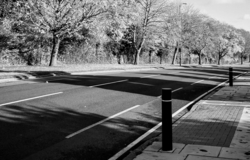

Pedestrian Crossing
What and Why
A brief evaluation
Pedestrian crossing with details for visually impaired.
We have become accustomed to our roads being cleaned and serviced at the same time. With electricity powering most of our life it is at time possible to forget simple things that don’t need energy to be functional and are at most times needed. Pedestrian crosses are simple white lines on tarmac that give indication to both drivers and pedestrians.
If a pedestrian is on the lines, it’s knowledge that they are crossing in the right way and using the correct methods. Pedestrian crossing to drivers signal that they must slow down and if being used the drivers must give way. For visually impaired indivuals before the pedestrian crossing there are light circular bumps just before the crossing signalling to the pedestrian the approach to the crossing.
Original Post found on Agnes A Blog